29 Shorts
Shorts
Bite-size guest stories, sports-medicine explainers and GOLFDOC’s picks. Each one opens on YouTube Shorts.
Guest stories
Locker-room tales, rivalries and life lessons from our guests.
Steve & John Jackson (Purdue / Houston Oilers) with Tevon Coney
 1:13
1:13Steve Jackson's Notre Dame Story
Sep 26, 2026 2:43
2:43From Player to Coaching: John Jackson and Tevon Coney's Journey
Sep 26, 20260:47
John Jackson's Concussion Story
Sep 26, 2026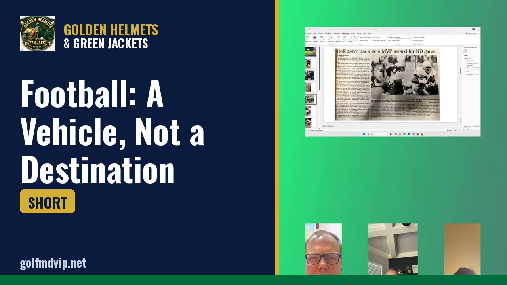
0:48Football: A Vehicle, Not a Destination
Sep 26, 2026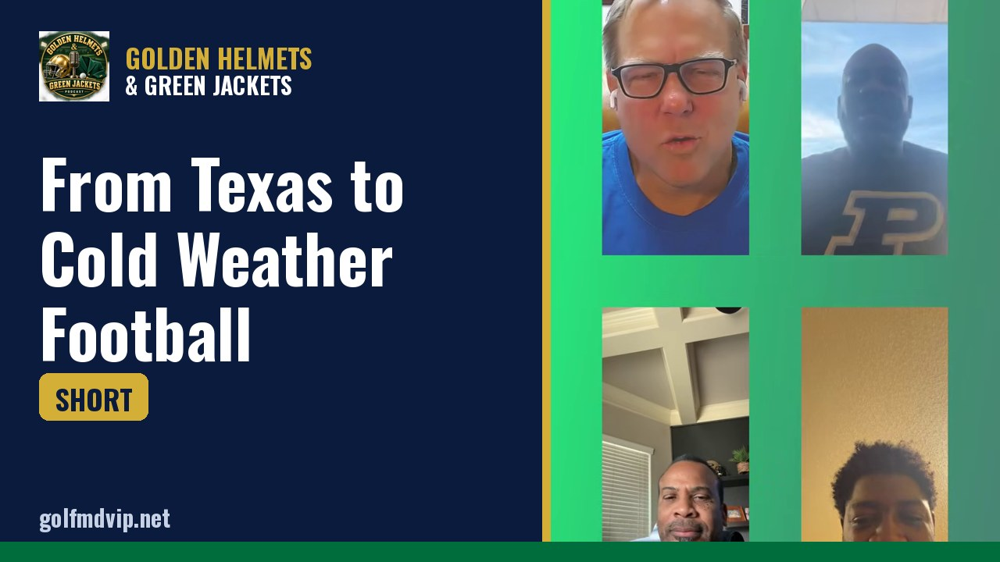
0:47From Texas to Cold Weather Football
Sep 26, 2026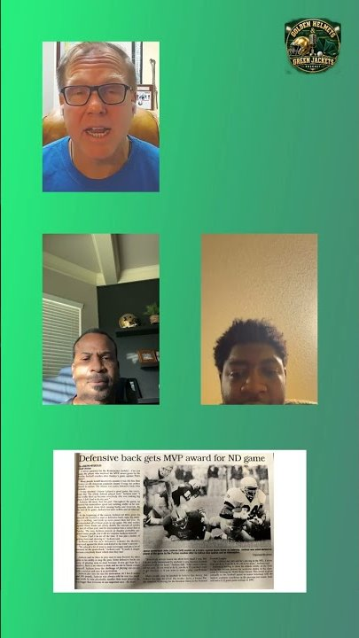
1:12Playing with Alonzo Highsmith at the Oilers
Sep 26, 2026Dr. A.J. Mencias

Gordon Niebylski (Michigan State)
 1:08
1:08Gordon's Shoulder Injury Story
Sep 19, 2026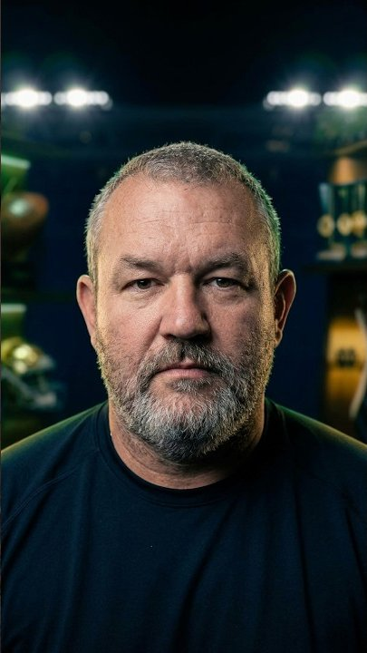
0:52Late Bloomer's Football Journey
Sep 19, 2026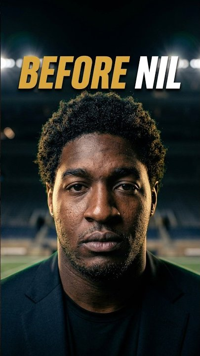
0:53Michigan QB Asks Dad for $100 for Drinks
Sep 19, 2026Tevon Coney

Sports medicine, explained
Quick, plain-English breakdowns of common athletic injuries and where orthopedics is headed. Educational only — not medical advice.
 1:00
1:00Fixing Scaphoid Fractures in Athletes
Sep 23, 2026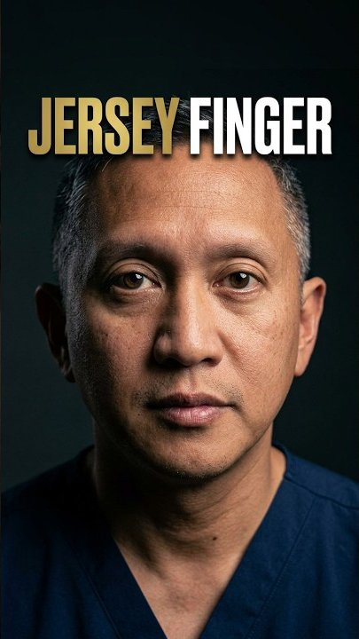
0:54Jersey Finger: Causes & Treatment
Sep 23, 2026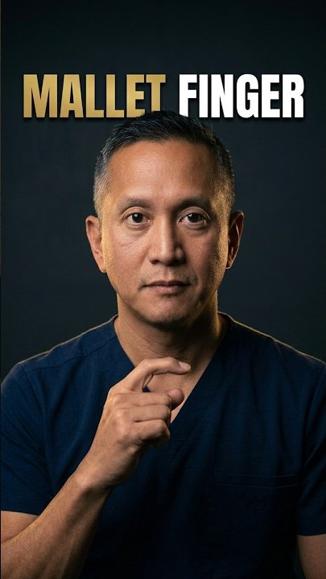
1:02Mallet Finger: Causes & Treatment
Sep 23, 2026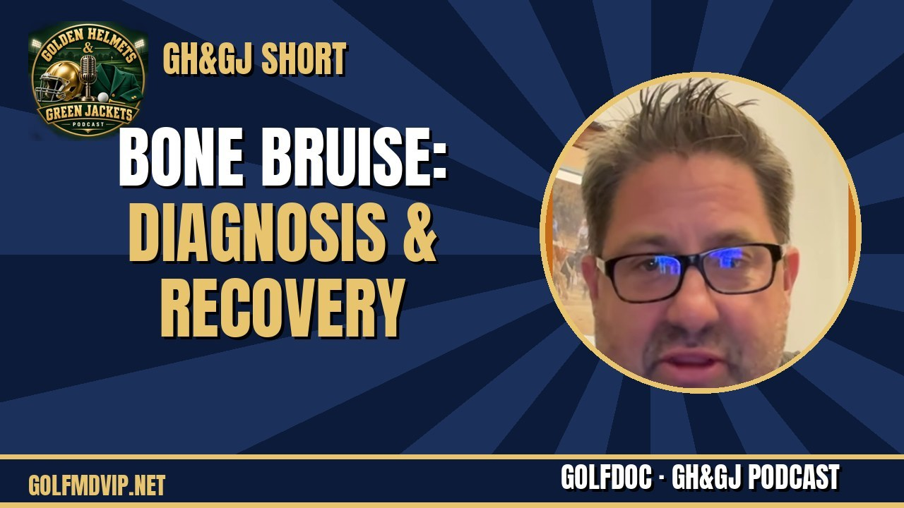
1:00Bone Bruise: Diagnosis & Recovery
Sep 12, 2026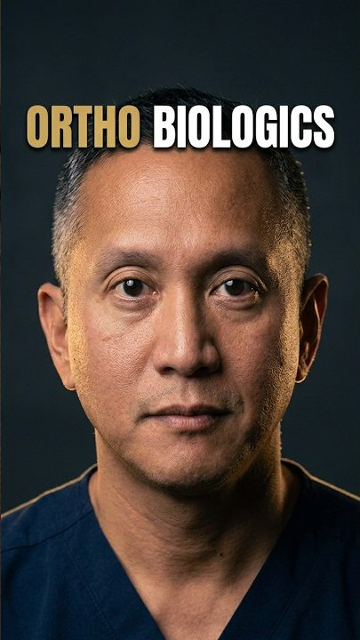
0:58Future of Ortho Biologics & 3D Printing
Sep 23, 2026GOLFDOC's picks & takes
Weekly college football picks and hot takes. For entertainment only.
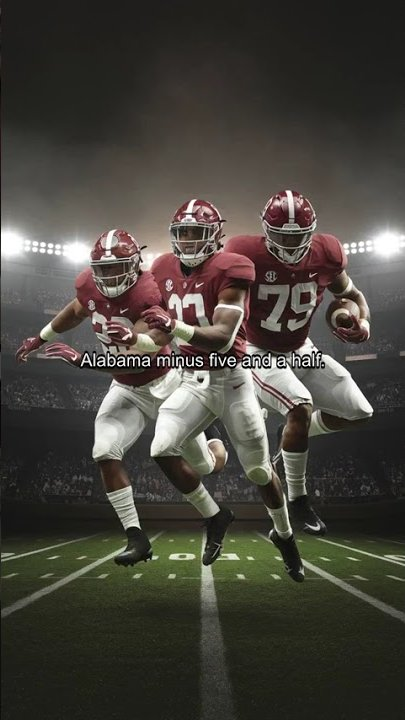
0:39GolfDoc Week 5 slate | Saturday Oct 3
Oct 2, 2026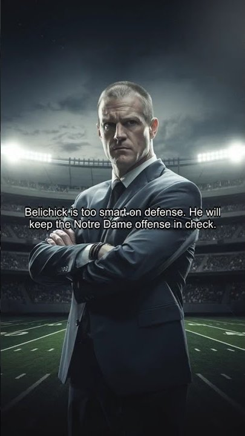
0:23GolfDoc: #3 Notre Dame at North Carolina
Oct 3, 2026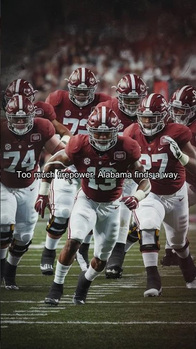
0:19GolfDoc: #7 Alabama at #16 Mississippi State
Oct 3, 2026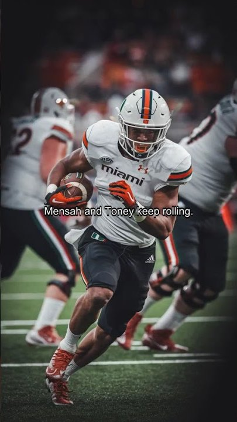
0:18GolfDoc: #4 Miami at Clemson
Oct 3, 2026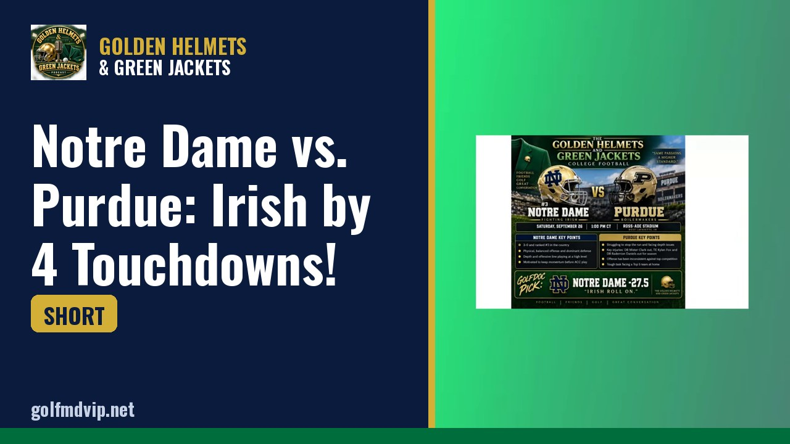
0:32Notre Dame vs. Purdue: Irish by 4 Touchdowns!
Sep 24, 20260:34
MAVERICK GAVE THE GOLFDOC A DIRECT ORDER… PICK OLE MISS!
Sep 24, 2026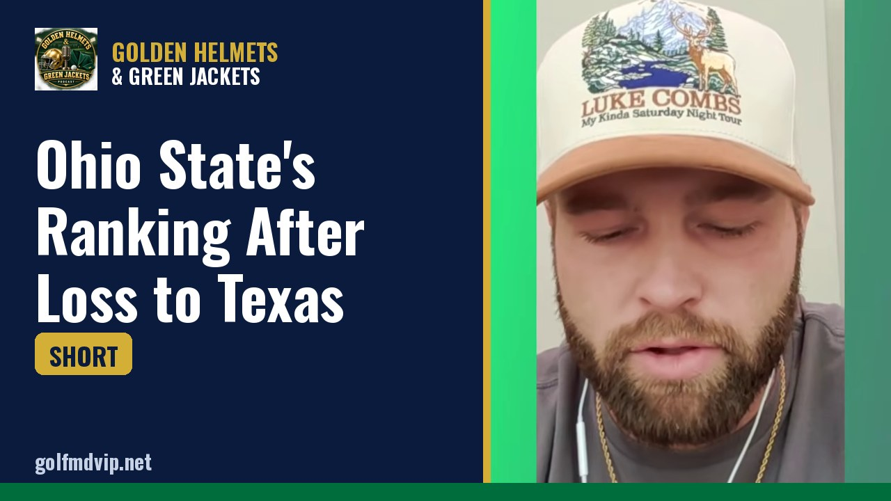
0:53Ohio State's Ranking After Loss to Texas
Sep 19, 2026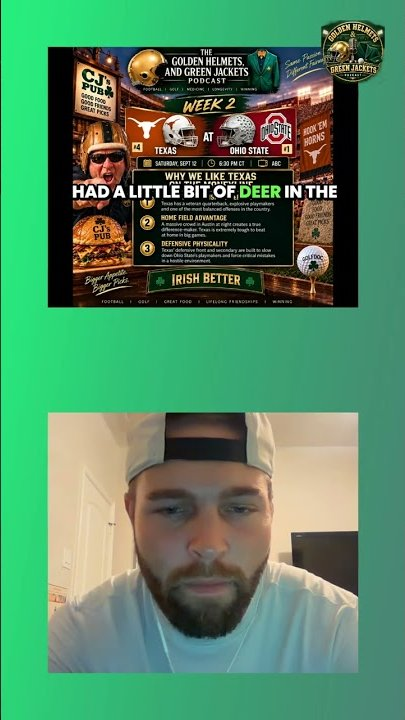
0:49Golf Doc Predicts Texas Over Ohio State
Sep 11, 2026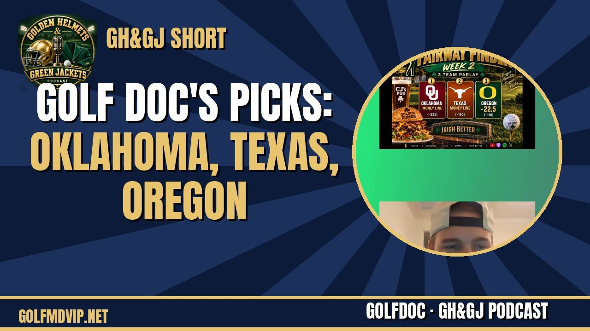
0:45Golf Doc's Picks: Oklahoma, Texas, Oregon
Sep 11, 2026 0:52
0:52Oklahoma vs Michigan: Golf Talk Picks Sooners
Sep 11, 20260:52